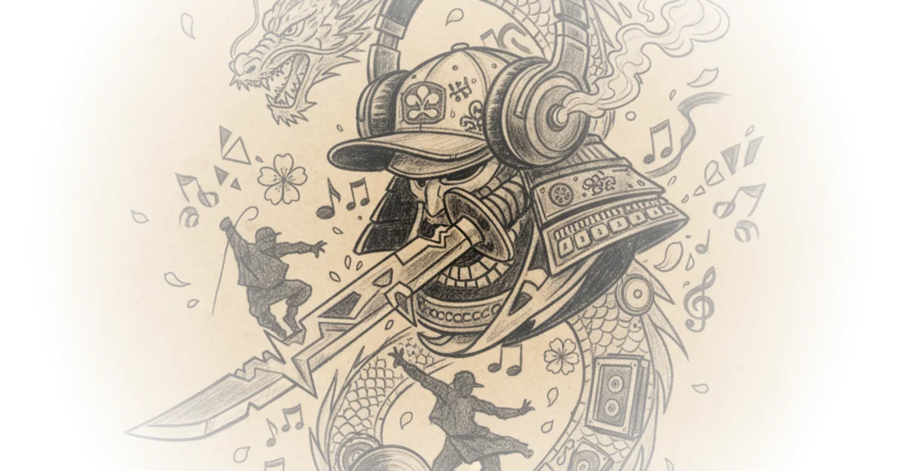

Music That Refuses to Stay in the Background
Animation Obsessive traces the sonic architecture of Samurai Champloo, the 2004 anime series that fused Edo-period swordplay with underground hip hop. The piece draws on interviews with director Shinichiro Watanabe and the producers who built the show's soundtrack -- Tsutchie, Nujabes, Force of Nature, and Fat Jon -- to argue that the music was never accompaniment. It was the foundation.
Watanabe's connection to hip hop predates his career in animation by a wide margin. He got hooked in high school during the early 1980s, gravitating toward the grittier end of the spectrum. His tastes ran toward A Tribe Called Quest, De La Soul, and the Jungle Brothers -- the kind of music that record-store regulars traded like currency. By the time he finished Cowboy Bebop in 1999, he had already tested hip hop in an episode that never aired outside Japan, featuring beats by Tsutchie.
I was convinced that hip hop music could be used in soundtracks. Some of my other staff said that it was too much of a risk to use just hip hop. I shot back, "If you think like that we might as well just have normal movie music."
That instinct -- that conventional scoring was the real risk -- would become Samurai Champloo's organizing principle.

The Samurai-Rapper Parallel
The intellectual link Watanabe drew between feudal warriors and hip hop artists is more interesting than it might first appear. His argument was not purely aesthetic.
In feudal times, it didn't matter what others said, and samurai would determine their own fate with their own sword. Many back then were aggressive about expressing themselves, very similar to rappers.
There is something to this. Both traditions valorize individual skill displayed under pressure, and both developed elaborate codes governing when and how that skill gets deployed. The comparison has its limits, of course. Samurai operated within rigid feudal hierarchies; rappers emerged from communities shaped by systemic exclusion. The parallel works better as a feeling than as historical analysis. But Watanabe was making an anime, not writing a dissertation, and the feeling was enough to carry an entire series.
Building the Sound Before the Animation
What distinguished Samurai Champloo's production was its sequence. Watanabe assembled his musicians before he had an animation team. Tsutchie came first, drawn in by the earliest outlines. Then Nujabes, a record-store owner in Shibuya whose lo-fi beats had not yet spawned the genre that would later bear his influence.
I wanted to hear music which sampled all the old soul and jazz that I liked.
Nujabes said this about his own motivations, but it could have come from Watanabe himself. Their tastes aligned almost perfectly -- dusty vinyl samples, jazz textures, a preference for mood over aggression. Fat Jon, an Ohio-born producer then living in Germany, rounded out the core team. His reaction to being recruited tells you something about the gravitational pull Watanabe had already built.
I was so, so, so happy that I nearly cried.
Fat Jon was already a devoted Cowboy Bebop fan. The collaboration was not a paycheck; it was a pilgrimage.
Competing at Fifty-Fifty
Watanabe's philosophy of music in animation was deliberately confrontational. He did not want a soundtrack that served the images. He wanted the two to fight.
Generally, a movie soundtrack just plays a supporting role to complement the visuals, to give them a hand. However, since Cowboy Bebop, I never wanted to do something like that. I wanted to make the music more prominent, to have the music and visuals compete 50:50. Sometimes, I thought it would be more interesting if the music stood out too much.
This is a radical position in any visual medium. Most directors treat music as emotional underlining -- telling the audience what to feel about what they are already seeing. Watanabe wanted dissonance. In the famous teahouse sword fight from episode one, Force of Nature's skittering breakbeat sits alongside the action without locking to it. The beats and the blade strikes weave around each other rather than syncing up. The effect is closer to jazz improvisation than film scoring.
A skeptic might ask whether this approach risks pulling viewers out of the story. If music and image are competing rather than collaborating, does narrative coherence suffer? Animation Obsessive's detailed scene analysis suggests the opposite. The tension between sound and image creates a layered experience that rewards attention. When Nujabes's melancholy saxophone sample plays over a fight scene in episode ten, it transforms what could be a routine action sequence into something that feels haunted.
Trust as a Production Method
Watanabe gave his collaborators extraordinary freedom. Fat Jon worked on the show with almost no feedback from the director. Force of Nature received minimal direction. Watanabe's reasoning was characteristically blunt.
People who are afraid of the director are no good. It's always better to do what you're going to do, even if it is a little off topic. That's the spirit of working together on the project. You have to be willing to take risks.
This hands-off approach produced results that a more controlling director would never have permitted. Fat Jon's contribution to episode seven -- a quiet piano piece laid over a desperate rooftop chase -- works precisely because it contradicts the expected emotional register. A conventional action score would have matched the character's panic. Fat Jon's restrained melancholy adds a dimension that urgency alone cannot provide.
The risk, naturally, is inconsistency. Four different producers with four different sensibilities could easily have produced a scattered, incoherent soundtrack. That it held together owes something to Watanabe's curation -- he chose artists whose underground sensibilities overlapped -- and something to the fact that lo-fi hip hop, for all its variety, shares a tonal palette of warmth, grain, and wistfulness.
Success in the Wrong Market
The article's most revealing detail arrives near the end. Samurai Champloo failed in Japan. Watanabe acknowledged years later that hip hop and anime appealed to separate audiences in his country at the time. The show's enormous international success was, by his own admission, a fortunate accident.
This is worth sitting with. The creative choices that made Samurai Champloo distinctive -- the underground sound, the refusal to score conventionally, the aesthetic tension between old Japan and modern beats -- were the same choices that alienated domestic viewers. What read as innovative abroad read as dissonant at home. Cultural context determined whether the tension felt exciting or simply wrong.
The show's afterlife has been kinder. Nujabes, who died in a car accident in 2010 at the age of thirty-six, became a foundational figure in the lo-fi hip hop movement that now saturates streaming platforms. The melodic, sample-heavy, melancholy sound that Watanabe sought out for his anime about wandering swordsmen turned into one of the most widely imitated production styles of the following decade.
Bottom Line
Animation Obsessive delivers a deeply researched account of how Samurai Champloo's soundtrack was conceived, assembled, and deployed. The piece is strongest when it moves beyond biographical detail into specific scene analysis, showing exactly how Watanabe's fifty-fifty philosophy worked in practice. The underlying argument -- that creative friction between sound and image produces something richer than harmony alone -- is persuasive and well-evidenced. Readers interested in music production, anime history, or the mechanics of cross-cultural aesthetic fusion will find substantial material here. Those unfamiliar with the show may find themselves reaching for a streaming service before they finish reading.